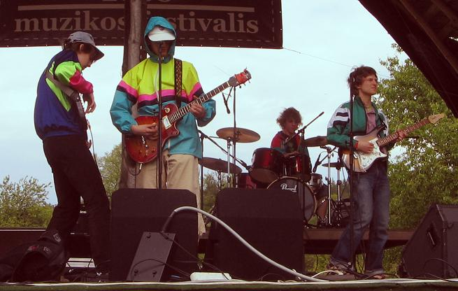

Biografija
Ilga kaip Vidas (nori)
I dalis. Nuo tada, kai Vidas metė Laurą, iki Tautvydo atėjimo KAD pagroti. (apie metai laiko)
Kaip viskas buvo iš tikrųjų.
Toks Vidas ir toks Žilvinas buvo ilgamečiai lengvos muzikos ansamblio "Gaidelis" nariai. Po naujų 2006 metų Vidas įsiskyrė su žmona, todėl daugiau laiko pradėjo leisti su tokiu Žilvinu. Ši delegacija sausio mėnesį nukeliavo į Artūro Baryso mirties metinių paminėjimą ir nusprendė būti šizovais menininkais. Grįžęs namo Žilvinas pabandė atsirinkti "Žunparkio" akordus ir, susisiekęs su Vidmantu pasakė, kad reikia grot Gaideliui Žunparkį, nes čia jė daina. Čia buvo jau 2006 metai ir Žilvinas vartojo tokį žodį "Galingai!". Jis pasakė Vidui, kad bus galia! Vidas pasakė, kad "Arklio Galia".
Žilvinas pamažu išmoko naudotis sintezatoriaus autoakomponimentu ir su tokiu Meinardu dainavo dainą "Atsisveikinimo daina". Gal mes jam šiek tiek atleisim, bet Meinardas buvo kiek vulgarokas ir dainavo "Kankalai, kankalai". Vidas dainavo kažką apie atsisveikinimą. Kitą dieną nusprendėm nufilmuoti šitą pasirodymą ir turėti. Meinardas neatėjo ir nusprendėm plačiai auditoriai pateikti cenzūruotą versiją, todėl tai tiesiog buvo atsisveikinimo daina, kurioje grupė "Arklio Galia" visiems laikams atsisveikino su klausytojais. Tą pačią dieną įrašėm skandalingą dainą "Man patinka tas čiūvas" apie roudbendų klavišinką Darių.
Nenugalimos rusiškos akustinės gitaros kėlė nerimą ir kėlė iš miego kaimynus. Žilvinas užsidirbo šiek tiek pinigų ir nusprendė būt koks Chendriksas, todėl 2006.04.01 už 200 litų nusipirko elektrinę gitarą "Musima Eterna Deluxe 25". Jo pavydžiam nusivylimui Vidas po mažiau kaip savaitės įsigijo iš Jovaro Yamaha elektrik gitar. įrašėm dainas "Nesidžiauk nebaigęs gyvenimo", "Pavydas", "Iškeliausim į pasaulį". Pirmųjų gitarinių Arklio Galios dainų tekstai buvo su patarlių žodyno įsikišimu. Vidas perskaitydavo patarlę, o paskui bandydavo ją prisiminti. "Meilė be pavydo tai kaip maistas be druskos" pavirto į "Pavydas - tai meilė be druskos".
Paskui Ainis nusipirko iš tokio Emilio bosą "Ural" ir pradėjom repetuoti rūsy ant taurakalnio su būgnais. Prie pastarųjų sedėjo toks Eimantas. Perspektyvus Žilvino kaimynas. Pagrojom po poros mėnesių koncertą Kaune.
Eimantas turėjo kitą grupę "RElouad", todėl po kiek laiko išėjo iš mūsų grupės. Groti būgnais atėjo Vido pusbrolis Domas. Jis buvo smarkiai jaunesnis už visus kitus, todėl pradžioj buvo sunku su juo bendrauti. Pirmąją dieną su nauju bumbačium į mūsų repeticijų padvalą atsivilko girtas Skylės bumbačius "SKIRMA", kuris mum paaiškino, kad bliuzas ne jaunimui, o reikia grot indiroką. Repetavom visą vasarą, bet su Domu apturėjom tik vieną roką Jonavoj. Vietoj jo pas mus atgrįžo toks Eimantas Burakas. Dar vieną koncertą pagrojom su Ainiu Šv.Kristoforo mokykloj, kur mus pastebėjo muzikos specialistas Tautvydas, kuris tada buvo su kostiumu ir ilgais plaukais. Sakė "Man patinka". Nuo tada Tautvydas buvo visuose mūsų koncertuose iki šiol.
Paskui vietoj Ainio į mūsų grupę atėjo moterų numylėtinis Simas mažinistas. Su juo pelnėm pasaulinę šlovė pagrodami Psichbaryje! Su Simu pagrojom keliuose koncertuose ir jis pasakė "Reikia pailsėt", todėl nuėjom pas Kouplendą daryt trijų įrašų tryse. įrašėm tris įrašus, kuriuose Žilvinas grojo ir bosu ir gitara, nes bosisto nebuvo. Pagrojęs su Kouplendo IRIS bosu Žilvinas pamanė, kad tai - puikus instrumentas ir pasisiūlė Vidui groti bosu vietoj gitaros, o gitaristu paimti Tautvydą, didžiausią Arklio faną. Vidas paklausė: "Bet tu su pirštais grosi, o ne su mediatorium?".]
Žilvinas parašė Tautvydui laišką, o Tautvydas pasakė, kad mirė Džeimsas Braunas.
II dalis. Nuo tada kai pagrojom pirmą koncertą iki tada kai sutikom Mildą. (lygiai metai laiko)

Iš kairės:
Žilvinas Jagėla (bosinė gitara)
Vidmantas Aškinis (vokalas, gitara, lūpinė armonikėlė)
Eimantas Burakas (mušamieji)
Tautvydas Augustinas (gitara, vokalas, klavišiniai, perkusija)
Milda Šemaitytė (atstovė kultūrai)
Buvę nariai:
Ainis Karpavičius (bosinė gitara) Simas Valiukevičius (bosinė gitara) Dominykas Niaura (mušamieji)
Arklio Galios nariai daugiau ar mažiau ar truputį buvo ar bus prikišę nagus prie aibės tokių dalykų kaip "Belgija Žaklinos Aky", "Reload", "LMA Gaidelis", "Sunshop", "Senasis Potvynis", "Candles Made Of Chocolate", "Čia gimę", "Gediminas Sudnikavičius", "Flu Folders", "Fallen men", "Rain Forest Puppets", "Talanda", "Kiauras Kibiras" ir "Baltasis Kiras", bet čia paslaptis.